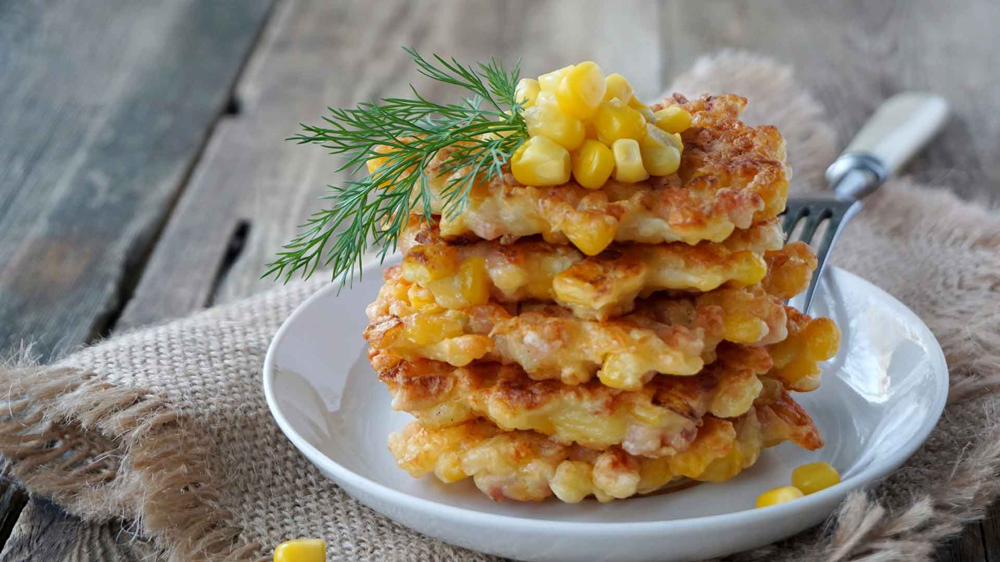

CORN FRITTERS

DESCRIPTION
These are so very delicious. The batter crisps up during the frying, but the kernels of corn maintain
their fantastic fresh pop. The result is a textural tug-of-war that will have you grabbing fritter
after fritter. Given the lack of corn in Medieval Europe, there are no extant recipes for corn
fritters from that time period. As such, we have created a recipe that produces corn fritters
that are flavorful, aesthetically consistent with Martin’s description, and would pair well with
the other foods he mentions in the passage.
INGREDIENTS
- 2 tablespoons unsalted butter
- Pinch of salt
- Kernels from 2 ears cooked corn, or 2 cups
- frozen or drained, canned corn
- ¼ cup milk
- 1 large egg
- ⅓ Cup yellow cornmeal
- ⅓ Cup all-purpose flour
- Pinch of ground black pepper
- 2 to 3 tablespoons vegetable oil
PROCEDURE
- Melt the butter in a nonstick skillet over medium heat and sauté the corn kernels for about 5
minutes
- sprinkle the corn with salt and set aside.
- a separate bowl, whisk together the egg and milk
until smooth, then stir in the cornmeal, flour, a pinch of pepper, followed by the corn.
- Heat 2 tablespoons of oil in the same nonstick skillet over medium heat until hot but not
smoking
- drop in 2 tablespoons of batter at a time
- until the fritters are golden brown on each
side, around 5 minutes total, then transfer them to paper towels to drain.
- Cook all the batter in this way,
adding more oil if necessary.
- Serve hot.